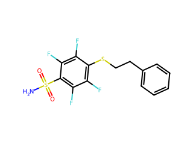
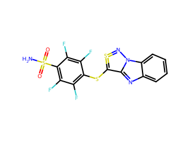
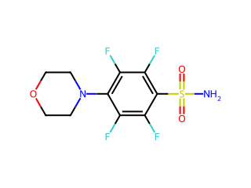
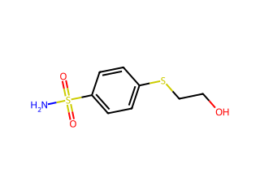

L01CHEMBL2333406벤치마크 데이터셋을 이용한 DeepDTA·Boltz-2 결합 친화도 예측 비교
CA1·CA13 × 화합물 6개 — 총 12쌍의 실행 결과와 해석
- 평가 목적: 실험에서 측정한 결합 강도를 두 모델이 얼마나 잘 예측하는지 비교
- 평가 방법: 실험값 대비 예측 범위·수치 차이·강도 변화 확인 · 순위는 보조 지표
- 범위: 선정한 12쌍의 모델 실행 비교 · 추가 학습·보정 없음
핵심 결과: 이번 CA 표본에서 Boltz-2가 화합물별 결합 강도 변화를 더 잘 반영
- DeepDTA: 예측이 pKd 5 근처에 집중 · 실험값과 큰 차이
- Boltz-2: 표시 점수의 변화가 실험 강도 차이를 더 잘 반영 · 수치상 실험 pKd에도 더 근접
- 해석 한계: 출력 척도 상이 · 정확한 Kd 예측 오차의 개선 폭은 미확정
2 × 6 = 12쌍단백질 2종 · 화합물 6개
2개 모델각각 12쌍 · 총 24개 예측
실험 Kd동일 논문의 측정값을 정답으로 사용
추가 학습 0회공개 체크포인트 그대로 추론
01
실험 구성
- 평가 대상: CA1·CA13 각각에 대한 여섯 화합물의 친화도 예측
- 주요 비교: 실험값 대비 모델별 예측 차이 · 화합물별 결합 강도 변화의 재현
- 실험 유형: 기존 실험값을 정답으로 사용하는 컴퓨터 기반 모델 평가
단백질 2종CA1 · CA13
×화합물 6개L01 · L02 · L03 · L04 · L05 · L06
→같은 12쌍DeepDTA·Boltz-2에 각각 입력
평가 대상: CA1·CA13
- 탄산무수화효소(Carbonic Anhydrase, CA) 계열의 서로 다른 두 단백질
- CA1·CA13: 단백질 이름 · 숫자는 실험 차수와 무관
- 공통 특성: 촉매 작용에 Zn²⁺ 사용
- CA1: P00915 · 261잔기 / CA13: Q8N1Q1 · 262잔기
잔기: 단백질 사슬을 이루는 아미노산 단위
평가 기준: Kd·pKd
- Kd: 작을수록 강한 결합 · 1 nM가 100 nM보다 강한 결합
- pKd: 큰 값이 강한 방향으로 변환한 Kd 표현
- pKd 1 증가 ↔ Kd 10분의 1
Kd ↓ = 강한 결합 / pKd ↑ = 강한 결합
pKd = 9 − log₁₀(Kd[nM]) · nM: 나노몰/리터
화합물 구성
 L02CHEMBL2333407
L02CHEMBL2333407
L03CHEMBL2333398
L04CHEMBL2333408 L05CHEMBL2333413
L05CHEMBL2333413
L06CHEMBL106848- 실제 SMILES를 RDKit으로 렌더링한 2차원 화학 구조
- L01–L06: 이번 비교의 로컬 식별자 · 약 이름·원 논문의 화합물 번호와 구분
화합물 선정 기준·실험 정답 출처
- 공통 후보: CA1·CA13 모두에 Kd가 있는 화합물 23개
- 선정 절차: 두 타겟 평균 실험 pKd 정렬 → 1·5·10·14·19·23번째 선정
- 선정 목적: 강한 결합부터 약한 결합까지 넓은 강도 범위 확보 · 모집단 대표 표본 아님
- 모델 예측값: 화합물 선정에 미사용
- 출처: 4-Substituted-2,3,5,6-tetrafluorobenzenesulfonamides as inhibitors of carbonic anhydrases I, II, VII, XII, and XIII
- ChEMBL 두 assay의 기재 조건: thermal shift assay · 37°C · pH 7.0 · 모든 세부 조건의 동일성은 미확인
- 공식 API 대조: 12개 기록의 분자 InChIKey·Kd·nM·등호 조건·수치 일치
- 정답 관리: 실험 Kd를 추론 입력에서 분리 → 예측 완료 후 평가에 사용
02
모델별 입력·예측 방식
- 공통 입력: 단백질 서열 + 화합물 SMILES
- Boltz-2 추가 정보: MSA + Zn²⁺ + 알려진 촉매 부위의 접촉 조건
- 비교 조건: 동일한 단백질·화합물 조합 · 모델별 입력 정보와 계산 경로는 상이
DeepDTA서열·문자열 기반
입력단백질 서열
화합물 SMILES문자열 → 숫자 배열
→화합물 SMILES문자열 → 숫자 배열
처리각각 CNN으로 특징 추출
특징 결합 → 회귀문자열의 주변 패턴을 학습한 모델
→특징 결합 → 회귀문자열의 주변 패턴을 학습한 모델
출력예측 pKd 한 값3D 구조 생성 없음
- 사용 구현: DeepPurpose CNN_CNN_DAVIS 공개 재현 체크포인트
- 학습 데이터: DAVIS 키나아제 · 원 저자의 TensorFlow 가중치와 구분
Boltz-2구조·친화도 예측
입력서열 + MSA + SMILES
Zn²⁺ + 접촉 조건MSA: 유사 단백질의 다중 서열 정렬
→Zn²⁺ + 접촉 조건MSA: 유사 단백질의 다중 서열 정렬
처리복합체 3D 구조 생성
친화도 모델로 점수 계산확산 기반 구조 생성 + 친화도 예측 경로
→친화도 모델로 점수 계산확산 기반 구조 생성 + 친화도 예측 경로
출력구조 파일 + 친화도 점수CIF 좌표 · affinity JSON
- 체인 구성: 단백질 A + 화합물 B + Zn 한 개 C · 친화도 binder: B
- 실험 리간드 자세·구조 템플릿 미제공
도식 범위: 계산 경로 설명 · 실제 단백질 형상의 묘사·이번 작업의 신규 학습 과정 아님
| 항목 | DeepDTA | Boltz-2 |
|---|---|---|
| 예측 대상 | 같은 12개 단백질–화합물 조합 | |
| 입력 정보 | 서열 + SMILES | 서열 + SMILES + MSA + Zn·접촉 조건 |
| 3D 구조 | 사용·생성 없음 | 복합체 구조 생성·활용 |
| 친화도 출력 | pKd · 큰 값이 강한 결합 | 일반 친화도 점수 · 공식 문서의 IC50형 로그 μM 척도 · 작은 값이 강한 결합 |
| 자료의 표시 방식 | 예측 pKd · 전체 결과표에 역변환한 예측 Kd | 6 − 원출력 · 큰 값이 강한 방향 |
| 추가 학습·보정 | 없음 · 공개 가중치 그대로 추론 | |
Kd·IC50·Boltz 점수의 차이
| 구분 | 의미·척도 | 이번 비교에서의 역할 |
|---|---|---|
| 실험 Kd / pKd | 평형 결합 세기 / pKd = 9 − log₁₀(Kd[nM]) | 실험 정답 · Kd와 pKd는 정확히 변환 가능한 같은 측정량 |
| IC50 | 반응을 50% 억제하는 농도 · 실험 조건에 의존 | Kd와 다른 측정량 · 농도 단위가 같아도 동일값으로 간주 불가 |
| DeepDTA | DAVIS Kd로 학습한 예측 pKd | 높은 값부터 정렬 · pKd 수치 오차도 계산 가능한 출력 |
| Boltz-2 | Ki·Kd·IC50 등 혼합 측정값으로 학습한 일반 친화도 점수 | 근사적인 IC50형 해석 · 개별 사례의 보정된 Kd와 구분 |
- 표시 변환:
6 − affinity_pred_value→ 높은 값이 강한 방향 · 로그 농도 표현·방향 통일 - 변환의 한계: IC50 → Kd 물리적 환산·이번 Kd 데이터에 대한 보정 효과 없음
- 평가 범위: 실험값 대비 예측 차이·강도 변화 중심 · 순위는 보조 지표 · Boltz 점수의 pKd 근접성만으로 Kd 정확도 우세 판정 불가
- 근거: Boltz-2 논문 §3 · 혼합 학습값·일반 친화도 해석 / 2.2.1 공식 출력 문서
실제 입력 예시·Zn²⁺ 조건
CA1 + L04 입력 예시
- 서열: 아미노산의 순서를 기록한 문자열
- SMILES: 화합물의 원자·결합을 기록한 문자열
- 공통 원칙: 실험 Kd 정답을 모델 입력에서 제외
단백질: CA1 / UniProt P00915 / 261잔기
서열 시작: MASPDWGYDDKNGPEQWSKLYPIANGNNQSPVDIKTSETKHDTS…
화합물: L04 / CHEMBL2333408
SMILES: NS(=O)(=O)c1c(F)c(F)c(N2CCOCC2)c(F)c1F- DeepDTA: 위 서열·SMILES 사용
- Boltz-2: 같은 서열·분자 + MSA + Zn 한 개 + His95·His97·His120 접촉 조건
- 접촉 조건: 각 His 잔기–Zn의 최소 원자 거리 4 Å 이내 유도 ·
force: true - Zn 설정: CCD ZN(+2) · 특정 질소 원자 고정·리간드–Zn 직접 제약 없음
- DeepDTA의 명시적 금속 입력 미지원 → 원래 인터페이스 유지 · 입력 정보 완전 통제 실험 아님
03
실험값·예측값 비교
- 주요 비교: 실험값과 각 모델 예측의 차이 · 화합물별 강도 변화의 반영 정도
- 출력 구분: 실험·DeepDTA는 pKd / Boltz-2는 표시 점수 · 절대값 정확도의 공통 척도는 미확보
- 분석 범위: 저장된 24개 모델 예측의 재정리 · 추가 추론·학습·보정 없음
실험 pKdDeepDTA 예측 pKdBoltz 표시 점수
모바일: 그래프·넓은 표 좌우 스크롤
화합물별 예측값
같은 행: 같은 화합물 · 실험 pKd가 큰 순서로 정렬 · CA1·CA13 선택은 두 그래프에 함께 적용


CA1 · L01 · C01
실험 Kd ↓0.2 nM2위 · 실험 pKd 9.699
DeepDTA pKd ↑4.9915위 · 예측 Kd 약 10,200 nM
Boltz 표시 점수 ↑9.0751위 · 원출력 −3.075
- 실험 pKd 9.699 대비 DeepDTA 예측 pKd 4.991 · 절대 pKd 오차 4.708
- Boltz 표시 점수 9.075 · 실험 pKd와의 수치 근접성 관찰
- Boltz 점수는 보정된 pKd가 아님 · 수치 차이를 실제 Kd 예측 오차로 해석하지 않음
12쌍 전체 수치·순위
- 실제 수치와 타겟별 1–6위 함께 표시 · 작은 순위 숫자 = 강한 결합
- 사례 번호 선택 → 위 상세 영역에서 해당 화합물의 순위·원점수 확인
- 동일 순위 없음 · 소수점 반올림 전 원출력으로 순위 산정
| 사례 | 대상 | 화합물 | 실험 Kd ↓ nM · 순위 | 실험 pKd ↑ | DeepDTA pKd ↑ · 순위 | DeepDTA 예측 Kd ↓ · nM | Boltz 점수 ↑ 6 − 원출력 · 순위 |
|---|---|---|---|---|---|---|---|
| CA1 | L01 | 0.2 · 2위 | 9.699 | 4.991 · 5위 | 10,200 | 9.075 · 1위 | |
| CA13 | L01 | 0.22 · 1위 | 9.658 | 5.160 · 5위 | 6,923 | 9.357 · 1위 | |
| CA1 | L02 | 0.25 · 3위 | 9.602 | 5.013 · 1위 | 9,710 | 8.889 · 2위 | |
| CA13 | L02 | 0.4 · 2위 | 9.398 | 5.273 · 1위 | 5,331 | 8.911 · 2위 | |
| CA1 | L03 | 0.4 · 4위 | 9.398 | 4.920 · 6위 | 12,030 | 8.444 · 3위 | |
| CA13 | L03 | 2.5 · 3위 | 8.602 | 5.069 · 6위 | 8,526 | 8.701 · 3위 | |
| CA1 | L04 | 0.13 · 1위 | 9.886 | 5.009 · 2위 | 9,784 | 8.396 · 4위 | |
| CA13 | L04 | 25 · 4위 | 7.602 | 5.214 · 4위 | 6,106 | 7.862 · 5위 | |
| CA1 | L05 | 2.2 · 5위 | 8.658 | 4.996 · 3위 | 10,087 | 7.206 · 5위 | |
| CA13 | L05 | 40 · 5위 | 7.398 | 5.216 · 3위 | 6,087 | 7.993 · 4위 | |
| CA1 | L06 | 200 · 6위 | 6.699 | 4.993 · 4위 | 10,153 | 6.324 · 6위 | |
| CA13 | L06 | 1,400 · 6위 | 5.854 | 5.246 · 2위 | 5,674 | 6.420 · 6위 |
보조 비교: 화합물별 순위

- 큰 숫자: 실험 Kd[nM]·DeepDTA pKd·Boltz 표시 점수 / 작은 글씨: 실험 pKd 또는 해당 화합물의 실험 순위
- 순위의 일치 여부: 비교 가능 · 순위만으로 실제 결합 강도의 배율·절대값 정확도 판단 불가
- 측정 오차·예측 변동성 미반영 · 가까운 후보의 작은 점수 차이 해석 제한
04
결과 해석
실험값 대비 모델별 예측 차이
- 평가 목적: 실제 결합 강도의 크기와 화합물별 차이를 모델이 얼마나 재현하는지 확인
- 핵심 관찰: DeepDTA의 예측은 좁은 범위에 집중 · Boltz-2는 실험 강도에 따른 변화를 더 잘 반영
| 타겟 | 실험 Kd nM | 실험 pKd | DeepDTA 예측 pKd | Boltz-2 표시 점수 |
|---|---|---|---|---|
| CA1 | 0.13–200 | 6.699–9.886 | 4.920–5.013 | 6.324–9.075 |
| CA13 | 0.22–1,400 | 5.854–9.658 | 5.069–5.273 | 6.420–9.357 |
각 칸은 해당 타겟의 최솟값–최댓값 · Boltz 표시 점수는 보정된 pKd와 구분
DeepDTA: pKd 5 근처에 몰린 예측
- CA1의 실험 pKd 변화 폭 약 3.19 / 예측 변화 폭 약 0.09
- CA13의 실험 pKd 변화 폭 약 3.80 / 예측 변화 폭 약 0.20
- 실험값과의 평균 절대 pKd 오차: CA1 4.003 / CA13 2.889
- 해석: 실제보다 약한 결합으로 예측 · 이번 CA 표본에서 화합물별 강도 차이 반영 부족
pKd 오차: 실험 pKd와 예측 pKd 차이의 절댓값 · 평균은 타겟별 6쌍 기준
Boltz-2: 실험 강도에 따른 변화 반영
- 강한 후보에서 높은 점수, 약한 후보에서 낮은 점수가 나타나는 경향
- 12쌍 중 12쌍에서 표시 점수가 DeepDTA pKd보다 실험 pKd에 수치상 더 근접
- 해석: 이번 CA 표본의 결합 강도 변화를 더 잘 반영
- 한계: 출력 척도 차이로 정확한 Kd 예측 오차가 얼마나 줄었는지는 미확정
숫자 사이 거리의 관찰 · 12쌍의 정확한 Kd를 맞혔다는 의미와 구분
결론: 이번 CA 표본에서 Boltz-2가 화합물별 결합 강도 변화를 더 잘 반영
- DeepDTA: 실험값 대비 큰 차이·좁은 예측 범위
- Boltz-2: 실험 강도에 따른 점수 변화·수치상 근접성 관찰
- 공통 Kd 척도의 정확도 개선 폭·광범위한 모델 우열은 미확정
절대값 비교의 한계·Kd 정확도 평가 조건
- 현재 가능한 결론: 이번 CA 표본의 실험값 대비 예측 차이·출력 범위·결합 강도 변화의 반영 정도
- 현재 제한되는 결론: Boltz 점수와 pKd의 수치 근접성만으로 ‘Boltz의 실제 Kd 오차가 더 작음’ 판정
- 수치 오차의 위치: 미보정 점수–실험 pKd 차이의 보조 보고는 가능 · 보정된 Kd 오차와 구분
- 향후 Kd 절대값 평가: 공통 목표를 실험 pKd로 고정 → 타겟·assay 조건 확인 → 별도 Kd 데이터로 두 모델의 보정 절차 학습·선택 → 보정에 미사용한 평가셋에서 MAE·RMSE 비교
- 평가 원칙: 보정 전·후 결과 분리 · 두 모델에 같은 보정 데이터·평가 규칙 적용 · 동일 12쌍으로 보정과 성능 판정을 함께 수행하는 방식 제외
- 현재 실행 범위: 위 보정·새 평가셋 실험 미수행 · 기존 예측의 수치·강도 경향·보조 순위 지표 재해석
비교 조건: 학습 분포·입력 정보의 차이
- DeepDTA 학습: DAVIS 키나아제 / 평가 대상: CA 효소
- Boltz-2 추가 정보·계산: MSA·Zn 조건·3D 구조 생성
- 결과 차이의 원인을 학습 분야·추가 정보·3D 활용 중 하나로 분리한 실험은 아님
보조 지표: 타겟별 순위 평가
- 순위 상관: 여섯 화합물의 실험 강도 순서와 예측 순서의 일치 정도
- 큰 차이 비교: 실험 Kd가 10배 이상 차이 나는 화합물 쌍에서 강한 쪽의 선택 여부
| 단백질 | 비교 기준 | DeepDTA | Boltz-2 |
|---|---|---|---|
| CA1 | 전체 순위 상관 | 0.257 | 0.657 |
| CA1 | 실험 Kd 10배 이상 차이: 강한 쪽 선택 | 4/7 | 7/7 |
| CA13 | 전체 순위 상관 | -0.314 | 0.943 |
| CA13 | 실험 Kd 10배 이상 차이: 강한 쪽 선택 | 4/12 | 12/12 |
- Spearman: +1 동일 순서 / 0 부근 약한 관계 / −1 반대 순서
- 10배 이상 차이의 순서 정답: DeepDTA 8/19 · Boltz-2 19/19
- 19개 비교: 동일 화합물의 파생 조합 · 독립 실험 19건·일반적 정확도 100%와 구분
보조 사례: L04의 수치와 순위
CA1 · L04 · 실험 Kd 0.13 nM
| 구분 | 수치 | CA1 내 순위 |
|---|---|---|
| 실험 pKd | 9.886 | 1위 |
| DeepDTA pKd | 5.009 | 2위 |
| Boltz 표시 점수 | 8.396 | 4위 |
- 실험 pKd와 수치상 더 가까운 쪽: Boltz-2 · 출력 척도 차이는 유지
- L04의 순위만 실험에 더 가까운 쪽: DeepDTA
- 한 후보의 순위 근접성과 전체 표본의 예측 성능은 구분
보조 관찰: 타겟 간 선호도
- 분석 범위: 같은 12쌍의 결과 재해석 · 별도 추가 실험 아님
- L05 실험 Kd: CA1 2.2 nM / CA13 40 nM → CA1에 약 18배 강한 결합
- L05 Boltz 점수: CA1 7.206 / CA13 7.993 → 실험과 반대 방향
- DeepDTA도 타겟 선호 방향 불일치
- 해석: 타겟 내 화합물 순위와 타겟 간 선택성은 별도 평가 항목
구조 검사 결과·친화도 정확도의 구분
- 12쌍 모두 확인: 서열·리간드 원자 수·Zn 원자·유한 좌표
- Zn 거리 작업 기준: His 질소–Zn 1.8–2.8 Å / 설폰아마이드 질소–Zn 1.7–2.8 Å
- 관측 거리: 약 1.89–2.09 Å · 12쌍 모두 간단한 검사 통과
- 미검증: 실험 결합 자세 RMSD·전체 PoseBusters·친화도 수치 정확도
- pLDDT·결합 여부 확률: 친화도 수치가 맞을 확률과 구분
- pH·온도: 실험 메타데이터 · 해당 조건의 자유에너지 직접 시뮬레이션 아님
표본·평가 설계의 한계
- 표본: 한 논문·CA 계열 타겟 2종·목적 선정한 화합물 6개
- 일반화 범위: 광범위한 신규 타겟·화합물 성능 미평가
- 중복 확인: 공개 DAVIS 화합물 대조 / Boltz 학습 데이터와의 중복 미확인
- 추가 학습·보정·여러 seed 반복 미수행 → 일반적 통계적 우열 해석 제한
- 학습 없는 ‘분자량이 큰 순서’의 순위 상관: CA1 0.429 / CA13 0.771 → 작은 목적 표본의 순위 결과 과대 해석 유의
- 시간 비교: DeepDTA 순전파와 Boltz 구조·친화도 전체 계산의 범위 상이 → 직접 속도 비교 제외
05
출처·자료 다운로드
단백질·Zn 조건
- CA1 · UniProt P00915 / CA13 · Q8N1Q1
- 공식 서열·촉매 His 부위·CCD ZN(+2) 확인
DeepDTA 원리·사용 구현
- DeepDTA 원 논문 · 고정 DeepPurpose 구현
- 체크포인트: CNN_CNN_DAVIS · CNN 특징 추출·회귀
Boltz-2 원출력·사용 버전
- Boltz 2.2.1 공식 입력·출력 문서
- 논문 §3 · Ki·Kd·IC50 혼합 학습·순위용 일반 친화도 점수
- 결합 여부 확률: 친화도 수치가 맞을 확률과 구분
재현 조건·검증 기록
- DeepPurpose 고정 소스:
866be98bad0b11e78d4363589b9ee59b5befa307 - DeepDTA: 엄격한 가중치 로딩 · 12개 입력의 잘림·미지원 문자 없음 · 동일 순전파 재확인
- Boltz 2.2.1 · PyTorch 2.5.1+cu121 · TITAN RTX · float32·fallback kernels
- 구조 설정: recycling 3 / sampling 200 / sample 1
- 친화도 설정: sampling 200 / sample 5 · max_parallel_samples 1 · seed 42 · potentials 사용
- 단백질별 MSA 캐시 해시 대조 · 이전 3개 출력 재사용 + 나머지 9개 배치 실행
- 배치 메모리 정리·재개 시 저장 구조 해시 확인
- 시드 42 유지 · 호출·배치·재개별 난수 진행 상이 → 동일한 사례별 난수 실현 아님
- 검증: 12개 고유 사례·원자료 식별자·점수 변환·순위 상관·비교 수·구조 기본 검사
- 자료 재생성: 저장 결과만 사용 · 모델 재추론 없음
그림·표·설명문 다운로드
공유용 설명문 · Markdown12쌍 결과 · CSV12쌍 순위표 · CSV순위 평가 · CSVCA1 예측값 그림CA13 예측값 그림CA1 순위 그림CA13 순위 그림데이터 · JSON


- CSV: UTF-8 · 원자료 수치 자리수 보존
- 정적 페이지: 열람·선택 시 모델·API 호출 없음
용어 정의
- 친화도 · Affinity
- 화합물과 단백질의 결합 세기
- Kd · 해리 상수
- 평형 상태의 결합 세기 지표 · 작을수록 강한 결합
- pKd
- Kd의 음의 로그 표현 · 클수록 강한 결합 · 1 차이 ↔ Kd 10배
- IC50
- 반응을 절반으로 억제하는 데 필요한 농도 · Kd와 다른 측정량
- SMILES
- 화합물의 원자·결합을 기록한 문자열 · 일반적으로 3D 좌표 자체는 미포함
- CNN · 합성곱 신경망
- 이번 DeepDTA에서 문자열 주변 패턴의 특징을 추출하는 학습 모델
- MSA · 다중 서열 정렬
- 유사 단백질 서열을 나란히 정렬한 정보
- 확산 기반 구조 생성
- 학습 모델로 원자 배치를 여러 단계 조정하여 3D 후보 구조 생성
- 체크포인트
- 사전학습 가중치 파일 · 이번 추론에 공개 체크포인트 사용
- 순위 상관 · Spearman
- 정답과 예측의 화합물 강도 순서 일치 정도
- CIF
- 원자 종류·3차원 좌표 등의 구조 파일 형식
- Zn²⁺ · 아연 이온
- CA 효소 촉매 부위의 금속 보조인자